Find the evidence. Answer the question. Measure each step.
Basic Python and JSON · 60–90 minutes
Offline teaching path + optional live language-model experiment
1. Understand the task
A step-by-step lab with LangGraph, sentence evidence, and scores you can inspect.
Find the evidence. Answer the question. Measure each step.
Basic Python and JSON · 60–90 minutes
Offline teaching path + optional live language-model experiment
Open the companion notebook while following the lesson.
This lesson assumes you can read Python lists and dictionaries. You do not need prior experience with retrieval augmented generation. Spend about 20 minutes on the dataset, 25 minutes on retrieval and graph execution, and 25 minutes on scoring. Use the remaining time for the exercises.
Arrow keys move between slides. Explain opens detailed teaching notes. Read all shows a continuous lesson and Print produces one slide per page. Every diagram is a local, editable SVG. The offline path tests software and explains measurement. Its scripted answer cannot establish language-model quality.
1. Understand the task
RAG gives an answer generator external text to use as evidence.
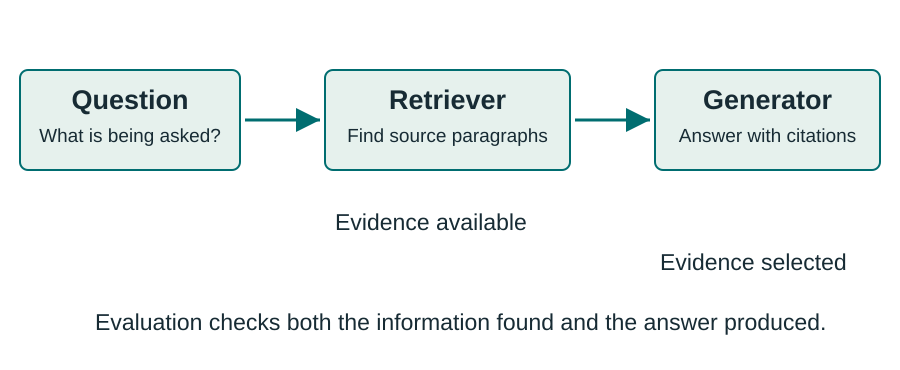
Open diagram for a larger view
A retriever selects passages. A generator answers using those passages.
A plausible answer alone cannot tell us whether retrieval worked.
Imagine a reference librarian finding useful pages before you write an answer. The retrieval stage changes what information the answer writer can see. A language model may also recall facts from training, which is why a correct answer by itself does not prove that retrieved evidence caused the answer.
In this tutorial, the retriever chooses paragraphs and the generator returns a short answer plus specific sentence coordinates. These create separate observations that an evaluator can check. We preserve the retrieved evidence as well as the final output.
1. Understand the task
A 2018 question-answering dataset built from Wikipedia with sentence-level evidence labels.
113k
Question-answer pairs in the original dataset, approximately.
Questions often require combining information from two supporting paragraphs.
HotpotQA provides both answer targets and evidence targets for evaluating RAG.
Yang and colleagues introduced HotpotQA at EMNLP 2018. The dataset contains human-written questions based on Wikipedia. Its important feature for this lesson is annotation at the sentence level: we can ask whether a system located and selected the evidence used by the dataset annotators.
The benchmark was designed around multi-hop question answering, but a high score does not demonstrate that every prediction used the intended reasoning process. Systems can exploit shortcuts or memorized information. We use this dataset to evaluate observable outputs and retrieval coverage, and keep stronger causal claims separate.
1. Understand the task
One fact identifies an entity that helps locate the next fact.
Question: In which city was the creator of Lantern Atlas born?
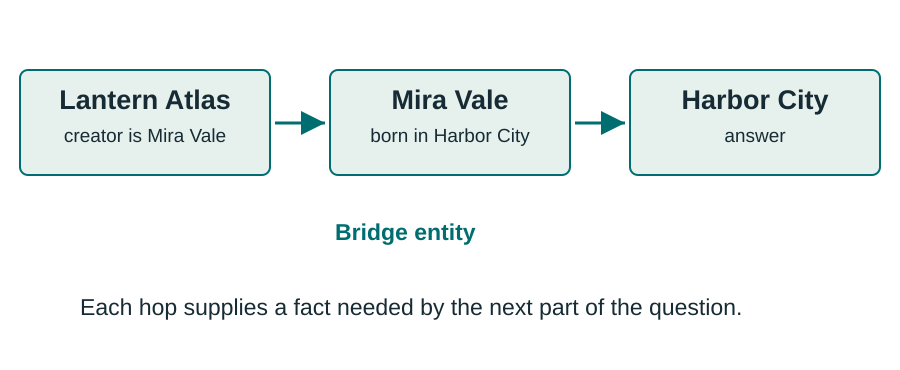
Open diagram for a larger view
Invented teaching example. These names and facts are synthetic.
The first paragraph supplies the bridge entity “Mira Vale.”
Read the question before looking at the answer. The question names the book but does not name its creator. The first supporting sentence links Lantern Atlas to Mira Vale. The second connects Mira Vale to Harbor City. The word “bridge” describes the entity that links those pieces of evidence.
Our short synthetic record makes the data format and graph behavior easy to inspect. It has four context paragraphs, unlike the standard ten-paragraph distractor setting. It is never included in a reported HotpotQA benchmark score.
1. Understand the task
Two sources provide values that the system must compare.
Question: Which theater opened first, River Theater or Hill Theater?
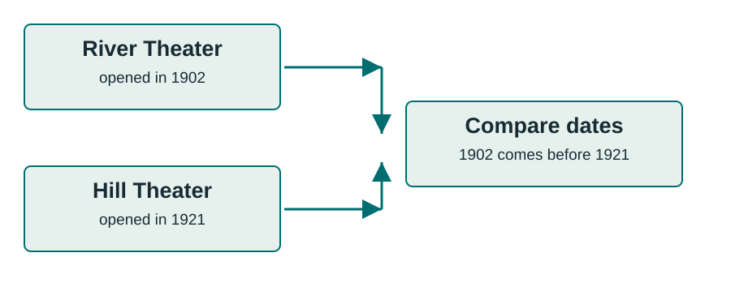
Open diagram for a larger view
Invented dates and theaters, used only to explain comparison.
Both relevant entities may already appear in the question.
Comparison questions can ask whether two entities share a property, or which entity has an earlier date or larger value. Our invented example requires extracting each opening date and comparing them. Unlike the previous bridge example, both names are directly available to the first retrieval query.
HotpotQA distinguishes bridge and comparison questions. The type is useful for later error analysis, but the agent in this tutorial does not receive that metadata. We want the system to determine what to retrieve from the question and evidence.
1. Understand the task
The candidate collection changes what the experiment measures.
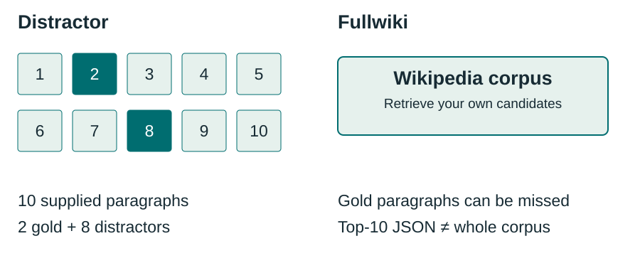
Open diagram for a larger view
This lab ranks each example’s supplied distractor paragraphs. It does not build a full Wikipedia index.
Results depend on the search space. Name that search space in every report.
In the distractor setting, each question arrives with ten candidate paragraphs: two supporting paragraphs and eight distractors. This evaluates evidence selection within a small, favorable candidate pool.
The fullwiki task requires finding evidence across the Wikipedia corpus. The released fullwiki JSON contains ten paragraphs returned by the original baseline retriever. It does not contain the entire corpus, and those ten may omit the supporting paragraphs. Pooling a few development examples into one small index also does not reproduce fullwiki evaluation. Use the released processed Wikipedia corpus when building a comparable corpus retrieval experiment.
2. Read the JSON
The same synthetic record appears in the notebook and in the linked raw file.
{
"_id": "synthetic-lantern-atlas-001",
"question": "In which city was the creator of Lantern Atlas born?",
"answer": "Harbor City", "type": "bridge", "level": "toy",
"supporting_facts": [["Lantern Atlas", 0], ["Mira Vale", 0]],
"context": [
["Lantern Atlas", ["Lantern Atlas is an invented book whose creator is Mira Vale."]],
["Mira Vale", ["Mira Vale was born in Harbor City."]],
["Harbor City", ["Harbor City is an invented coastal city."]],
["Cloud Almanac", ["Cloud Almanac is an invented book created by Niko Fern."]]
]
}The real dataset file is a JSON list of records with this structure.
This is valid JSON, with double-quoted strings, arrays in square brackets, and an object in braces. Open the raw teaching JSON to inspect the exact file. Here we print every field and every sentence, with whitespace compressed to fit the slide.
The four paragraphs and the level value “toy” belong to our teaching fixture. Official distractor examples have ten paragraphs and official difficulty labels use easy, medium, or hard. The top-level object here makes a single record easy to teach. Official split files wrap records in a top-level list.
2. Read the JSON
The agent needs the task and candidate evidence. The evaluator needs the answers.
| Field | Meaning | Use in this lab |
|---|---|---|
question | The question to answer | Agent input |
context | Title and sentence list per paragraph | Agent input |
answer | The reference short answer | Scoring only |
supporting_facts | Reference sentence coordinates | Scoring only |
_id, type, level | Identity and descriptive metadata | Join results and analyze slices |
Do not give the agent the entire labeled record.
The easiest leakage bug is sending json.dumps(example) directly to a model. That includes the reference answer and the reference supporting facts. A high score from this prompt measures access to the answer key.
Construct the graph input deliberately from the question and context. The experiment runner can retain the example ID outside the agent, then join the result to the labels afterward. The type and level fields support analysis but are not prediction inputs here. The official test release does not supply the answer and supporting-fact labels.
2. Read the JSON
The pair [title, sentence_id] locates one original sentence.
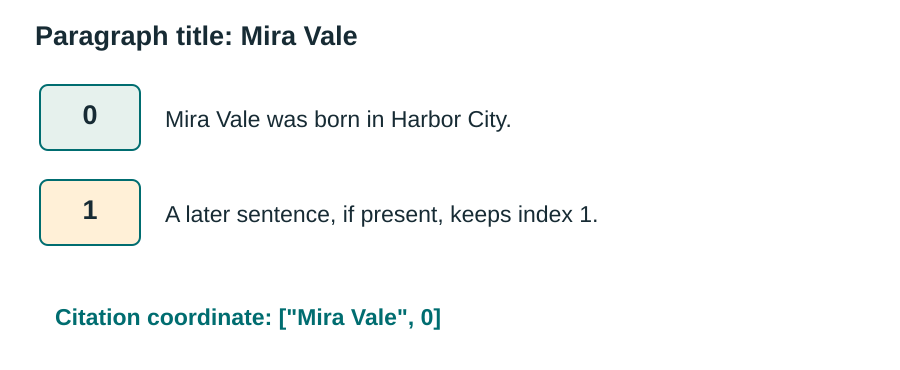
Open diagram for a larger view
["Mira Vale", 0] selects the first sentence, because indexing starts at zero.
Keep original titles and indices stable through ranking, chunking, and generation.
HotpotQA supporting facts do not store copied sentence text. They store a title string and a zero-based sentence index. The evaluator compares these pairs exactly. A different title capitalization or a changed sentence index can turn the same intended evidence into an incorrect prediction.
The second row in the diagram is illustrative: the toy Mira Vale paragraph has only sentence zero. Real paragraphs often have multiple sentences. If your chunker combines or splits sentences, retain a mapping back to the original title and index. Do not renumber a sentence merely because it is now the first sentence of a retrieved chunk.
2. Read the JSON
Selected fields from data/example.json, with original strings and coordinates.
{
"_id": "5abd94525542992ac4f382d2",
"question": "2014 S/S is the debut album of a South Korean boy group that was formed by who?",
"answer": "YG Entertainment",
"type": "bridge",
"supporting_facts": [["2014 S/S", 0], ["Winner (band)", 0]]
}["2014 S/S", 0]: 2014 S/S is the debut album of South Korean group WINNER.
["Winner (band)", 0]: Winner (Hangul: 위너), often stylized as WINNER, is a South Korean boy group formed in 2013 by YG Entertainment and debuted in 2014.
The full raw record retains all ten context paragraphs and every sentence.
Open the actual raw JSON record. This slide omits context and level from the JSON display to make the question and annotation legible. It then prints the two referenced context sentences separately. The full file preserves the original HotpotQA schema and the complete distractor context.
The annotated path connects the album to WINNER and WINNER to its founding company. Notice that album sentence 1 also names YG Entertainment as a label. A system might use this shortcut or prior knowledge. Matching the answer and supporting facts does not prove that the annotated reasoning path caused the prediction.
The module reconstructs the original JSON representation from the official HotpotQA Hugging Face mirror at a pinned revision. See provenance.json for source hashes and transformation details. HotpotQA data is CC BY-SA 4.0. Credit Yang et al., 2018.
2. Read the JSON
The notebook loads an attributed development sample and inspects its original records.
examples = json.loads(Path("data/dev_sample.json").read_text())
example = examples[0]
print(example["_id"], example["type"])
print(example["question"])
print(example["supporting_facts"])
for title, sentences in example["context"]:
for sentence_id, sentence in enumerate(sentences):
print(title, sentence_id, sentence)Inspect a complete record before changing preprocessing or retrieval.
Run the matching inspection cell in the notebook. The real sample preserves every original context sentence and annotation for each included development record. Its provenance file identifies the upstream source and sampling procedure. The synthetic example and the real sample are separate files so their roles remain visible.
Choose one supporting-fact coordinate and manually locate that sentence in context. Count the paragraphs. Check whether two supporting sentences can share a title. These small checks establish the shape of the data before you rely on aggregate metrics. The code above uses the bundled dev_sample.json file. The notebook also opens example.json to inspect the album question shown on the previous slide.
2. Read the JSON
Gold labels enter the evaluator after prediction finishes.
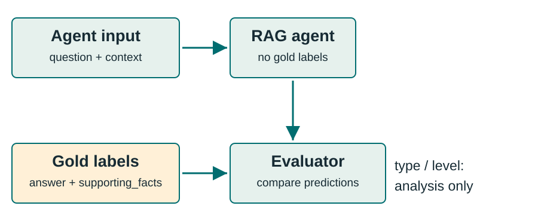
Open diagram for a larger view
The graph state and model prompts contain question, retrieved text, and run metadata.
Separating the objects in code makes accidental leakage harder. The retriever sees the candidate texts because the distractor protocol explicitly supplies them. It must not use supporting_facts to choose which candidates enter the index or to boost their scores.
A diagnostic oracle is an intentional exception: an experiment may supply gold paragraphs to isolate the generator’s ability. Label that result as an oracle diagnostic and keep it separate from ordinary retrieval results. The default pipeline in this lesson does not use a gold oracle.
3. Build and run the RAG graph
The default experiment evaluates retrieval within each real example’s distractor context.
k = 1, 2, 4, 10.The bundled sample teaches the method. It cannot support a leaderboard claim.
The k values define how many paragraphs one retrieval call returns. The ten-paragraph condition is a coverage control: when all candidates enter the evidence, reference evidence should be available under the distractor setup. This does not mean the generator will use it correctly.
The real-data retrieval ablation can run without a hosted model. A separate scripted graph demonstration checks routing and output handling on a synthetic example. Only the optional live run produces model-generated answers for an answer-quality experiment. Keeping these experiments distinct makes the interpretation of each result clear.
3. Build and run the RAG graph
The required path runs locally after Python dependencies are installed.
cd hotpotqa
uv sync --locked
uv run jupyter lab
# Open the module notebook and run cells in order.
# Keep live model calls disabled for the offline lesson.Use the module README for the notebook filename and optional model setup.
A fresh kernel avoids silently reusing old data, objects, or outputs.
Run the offline path first, then decide whether to enable live calls.
The environment lock file records tested dependencies. The notebook uses LangGraph even in the offline graph demonstration, so this is not a substitute graph drawn only for presentation. TF-IDF runs locally and needs no embedding service.
Dependency installation may require network access. Once dependencies and the bundled data are present, the required lesson runs without API credentials or model calls. The optional live section explains the model name, environment variable, data sent to the provider, and call limits. Do not place API keys in the notebook or its saved outputs.
3. Build and run the RAG graph
Keep sentence coordinates inside each paragraph.
A paragraph can contain useful evidence and irrelevant sentences together.
Each context entry is already a titled paragraph represented as a list of sentences. Our baseline indexes the title and paragraph text. It does not require a general-purpose chunker or vector database, which keeps the unit of retrieval aligned with the data.
After retrieving paragraphs, render their original sentence numbers into the prompt. The generator can then select particular sentences. If you replace this baseline with smaller chunks later, evaluate whether chunking loses a bridge fact or breaks the citation mapping.
3. Build and run the RAG graph
TF-IDF represents a paragraph using weighted vocabulary terms.
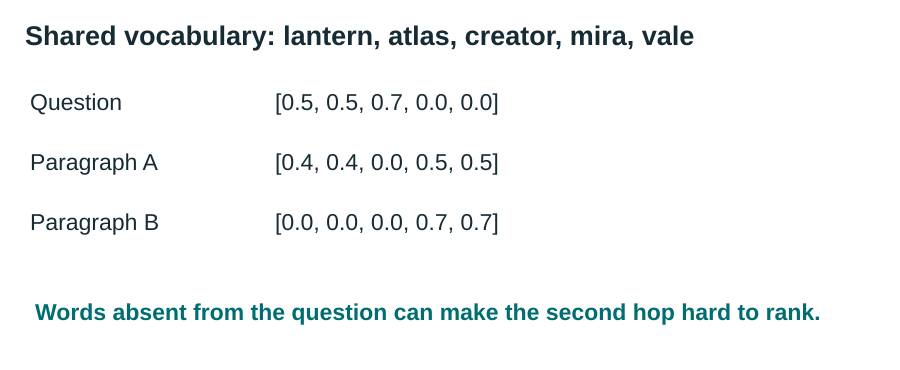
Open diagram for a larger view
The displayed weights illustrate the idea. They are not values measured by the notebook.
This is sparse lexical retrieval. Dense embedding retrieval is a later experiment.
Term frequency reflects how often a term appears within a document. Inverse document frequency gives more weight to terms that occur in fewer documents in the candidate collection. Cosine similarity compares a query vector with paragraph vectors. scikit-learn provides the implementation used by the tutorial.
TF-IDF is inexpensive and interpretable, but it depends on word overlap. The second paragraph in a bridge question may contain the creator’s name without containing the book’s name. That makes iterative query rewriting worth investigating. No dense embedding model or approximate nearest-neighbor database is required for this baseline.
3. Build and run the RAG graph
Nodes read shared state, return updates, and route to the next step.
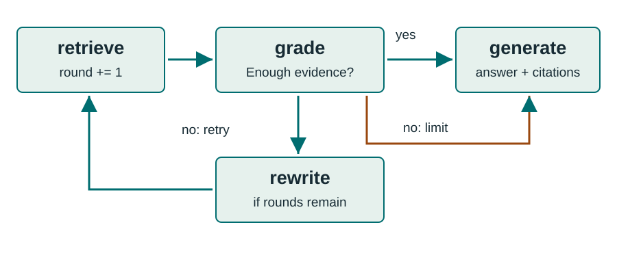
Open diagram for a larger view
A fixed retrieval-round limit makes the loop finite.
The official LangGraph tutorial demonstrates retrieval, evidence grading, question rewriting, and answer generation. We adapt that pattern to HotpotQA’s paragraph inputs and sentence citations. The node that grades evidence asks whether the retrieved material is sufficient for the original question.
The graph retrieves before grading. A positive grade routes to generation. A negative grade routes to rewriting only if another retrieval round remains. At the bound, generation receives the evidence available and may abstain. The trace records the final sufficiency grade and round count. A run that reaches the round limit can still have status ok, so inspect the trace when diagnosing evidence insufficiency.
3. Build and run the RAG graph
State connects retrieval decisions to observable evaluation records.
answer and sp.retrieved_titles and retrieved_facts.invalid_citations and status.Save the trace so a score can be connected to the decisions that produced it.
The original question stays fixed while the query may change. This matters because a rewrite is an intermediate search request, not a replacement task. Accumulated evidence preserves useful paragraphs from earlier rounds.
The final result includes answer and citation outputs for official scoring, plus custom diagnostics about what the generator could see. A citation can be invalid because its title or index does not exist in the evidence. Record those errors rather than inventing a valid coordinate. The trace lets you inspect how a rewrite changed retrieval and whether generation proceeded at the round limit.
3. Build and run the RAG graph
The grader checks whether the retrieved text can answer the whole question.
Question: In which city was the creator of Lantern Atlas born?
Evidence: “Lantern Atlas is an invented book whose creator is Mira Vale.”
Decision: Insufficient. The creator is identified, but the birthplace is missing.
The grader receives the question and retrieved text, with no reference answer or supporting-fact labels.
A model grader can make mistakes. Its decision is not an official HotpotQA metric.
Relevant evidence and sufficient evidence are different. The sentence about the book is relevant, but it does not answer the birthplace question. A sufficiency decision should consider all facts needed to support the answer, including a missing second hop.
The offline backend returns scripted decisions so both graph paths are easy to demonstrate. The live backend asks a model for a structured decision and explanation. A false-positive sufficiency decision can stop retrieval too early. A false negative can add cost or distractors. Inspect these routing errors alongside answer metrics.
3. Build and run the RAG graph
Use only facts already available to the agent when forming the next query.
In which city was the creator of Lantern Atlas born?
Mira Vale birthplace
The name comes from retrieved text.
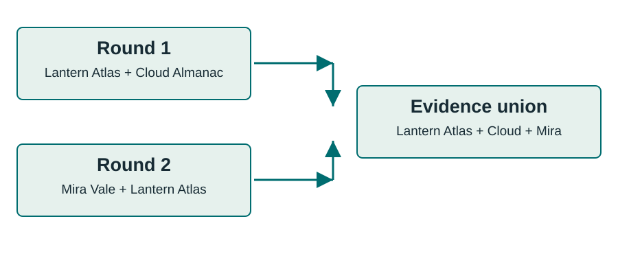
Open diagram for a larger view
Two rounds with k = 2 can expose up to four distinct paragraphs.
After the first retrieval finds the book paragraph, the graph knows the creator’s name. Rewriting the query around that name can help the lexical retriever reach a paragraph that had little overlap with the original question.
The implementation keeps the union of paragraphs across rounds. Therefore the total evidence size may exceed k. A fair comparison with a single-call retriever should report the number of calls, total distinct evidence paragraphs, context tokens, and latency. Adding a rewrite changes both the search process and the potential evidence budget.
3. Build and run the RAG graph
A short answer string keeps benchmark scoring separate from explanatory prose.
{
"answer": "Harbor City",
"citations": [
{"title": "Lantern Atlas", "sentence_id": 0},
{"title": "Mira Vale", "sentence_id": 0}
]
}The adapter validates coordinates and converts citations into HotpotQA’s sp pairs.
A citation must identify evidence the generator actually received.
The internal structured response names each citation’s title and sentence ID. The adapter checks that both appear in the retrieved evidence and produces pairs for the official output format. Preserve invalid-citation diagnostics so an apparent format repair does not conceal model errors.
The live prompt instructs the model to return an empty answer string and no citations if evidence is insufficient. HotpotQA primarily measures answering its answerable benchmark questions, so abstaining generally lowers the answer score. You can still track abstention separately for a real application. A well-formed citation proves the coordinate exists. It does not by itself prove the cited sentence entails the answer.
3. Build and run the RAG graph
The same graph can run with different backends.
| Offline scripted backend | Optional live backend | |
|---|---|---|
| Decisions and answer | Provided by tutorial code | Generated by a model |
| What it demonstrates | Routing, retries, citation checks | Observed model behavior |
| API calls | None | Up to 4 per example at 2 rounds |
| Valid conclusion | The pipeline behaves as tested | Performance on this measured sample |
A scripted correct answer is not evidence of RAG answer quality.
ScriptedBackend supplies predefined grades, rewrites, and an answer. It is a test double: a controllable component used to verify the graph and evaluator. The known answer is deliberately part of the demonstration fixture. Do not aggregate that fixture into model benchmark results.
With max_rounds=2, LiveBackend uses at most two grader requests, one rewrite request, and one generation request at the graph level. The notebook disables client retries with max_retries=0. Other deployments may enable retries, which can add underlying HTTP attempts. Record the provider’s token usage and billing separately when available. The optional model run remains a small local experiment unless expanded to a documented benchmark protocol.
4. Score retrieval, evidence, and answers
Each metric answers a different question about one run.
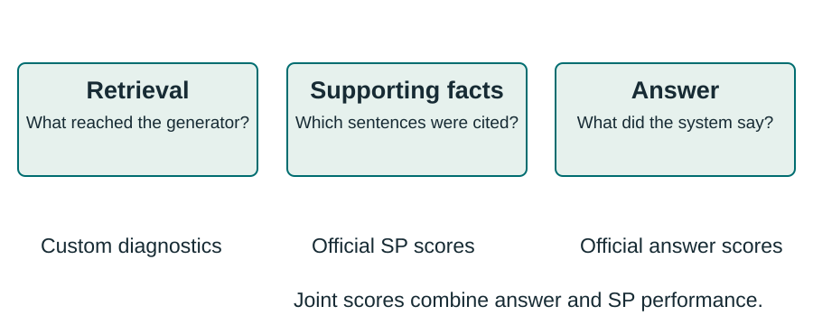
Open diagram for a larger view
Official HotpotQA scores cover answers and supporting facts. Retrieval diagnostics are additional.
Retrieval coverage uses the set of sentences available to the generator. Supporting-fact scoring uses only the sentence coordinates that the system chooses as evidence in its output. These sets can be very different even when the system reads complete paragraphs.
Answer exact match and token F1 compare the short answer with its reference. Joint scores combine answer and supporting-fact precision and recall. Keep these names distinct in tables. Calling retrieved-sentence recall “supporting-fact F1” would merge two different behaviors and hide evidence-selection failures.
4. Score retrieval, evidence, and answers
Use the hidden gold facts only after retrieval to measure what was found.
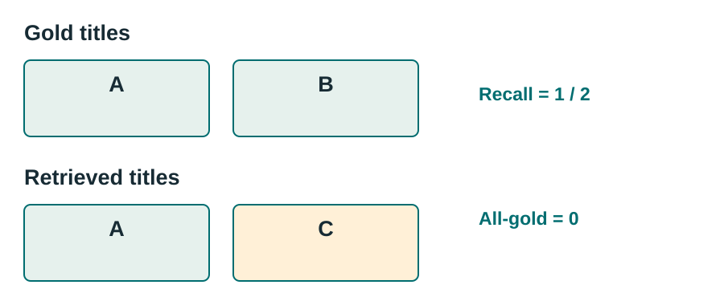
Open diagram for a larger view
Sentence coverage: gold sentence coordinates present in retrieved evidence ÷ all gold coordinates.
Finding one of two supporting paragraphs can still leave a question unanswerable from evidence.
Gold paragraph recall is the number of distinct supporting titles retrieved divided by the number of distinct supporting titles. All-gold success is one only if every gold title is present. Average each per-example quantity across the evaluated examples.
Gold sentence coverage uses original sentence coordinates rather than title sets. Retrieving complete paragraphs often makes paragraph recall and sentence coverage move together, but they can differ when paragraphs have unequal numbers of gold sentences or when you later truncate or chunk text. Score the actual evidence visible to generation, not a larger pre-truncation retrieval list.
4. Score retrieval, evidence, and answers
The official scorer normalizes text before comparing answers.
Gold: Harbor City
Prediction: Harbor
Precision = 1/1 = 1
Recall = 1/2 = 0.5
F1 = 2/3 ≈ 0.667
Exact match = 0
Lowercase, remove ASCII punctuation, remove “a”, “an”, “the”, and collapse whitespace.
Token overlap counts repeated words. It does not measure semantic equivalence.
Special answers yes, no, and noanswer get zero token F1 when they mismatch.
Precision divides the matched token count by the predicted token count. Recall divides that count by the reference token count. F1 is their harmonic mean. Counter-based overlap preserves token multiplicity, so repeated words are not treated as a simple vocabulary set.
Normalization lets harmless differences such as “The Harbor City!” match “Harbor City.” It does not recognize every alias or paraphrase. The yes, no, and noanswer rule prevents partial token overlap from rewarding a mismatched categorical answer. Use the official evaluator as the compatibility target and test edge cases rather than inventing an approximately similar scorer.
4. Score retrieval, evidence, and answers
Compare sets of exact (title, sentence_id) pairs.
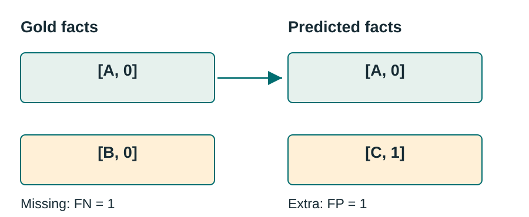
Open diagram for a larger view
TP = 1, FP = 1, FN = 1
Precision = 1/2
Recall = 1/2
SP F1 = 0.5
SP exact match = 0
Citing extra sentences can raise coverage while reducing evidence precision.
The gold set has two coordinates. The prediction shares one, misses one, and introduces one extra coordinate. A true positive is an exact coordinate intersection. A false positive is a predicted coordinate absent from the reference set. A false negative is a missing reference coordinate.
The official scorer converts both lists to sets, so duplicates do not improve the score. SP exact match requires the entire predicted set to equal the gold set. Titles are not answer-normalized. This metric measures agreement with the annotated evidence, not a semantic judgment that every alternative evidence sentence is false.
4. Score retrieval, evidence, and answers
Continue the previous worked examples: answer P = 1, R = 0.5; SP P = 0.5, R = 0.5.
Joint precision = answer P × SP P = 1 × 0.5 = 0.5
Joint recall = answer R × SP R = 0.5 × 0.5 = 0.25
Joint F1 = 2 × 0.5 × 0.25 / (0.5 + 0.25) = 1/3
Joint exact match = answer EM × SP EM = 0.
Compute per question, then take the mean. Use the formula above, even when a particular example happens to equal the product of the two F1 scores.
Joint F1 is generally not answer F1 multiplied by SP F1.
The official implementation multiplies precision values and recall values first, then computes their harmonic mean. In this worked case the result happens to equal the product of answer F1 and SP F1, but that equality is accidental.
For a counterexample, let answer precision = 1 and recall = 0.5, and SP precision = 0.5 and recall = 1. Each component F1 is 2/3, so their product is 4/9. Official joint precision and recall are both 0.5, giving joint F1 = 0.5. The scorer averages per-example metrics, rather than pooling tokens across all questions.
4. Score retrieval, evidence, and answers
Two dictionaries use the original example ID as their key.
{
"answer": {
"synthetic-lantern-atlas-001": "Harbor City"
},
"sp": {
"synthetic-lantern-atlas-001": [
["Lantern Atlas", 0], ["Mira Vale", 0]
]
}
}Synthetic format example. Real exports use the selected real HotpotQA IDs.
Score against the matching gold subset and keep its IDs with the predictions.
The official prediction schema differs from the labeled input schema. It uses singular answer and abbreviated sp keys whose values are dictionaries. The example above demonstrates the file shape and does not represent a benchmark submission.
The official evaluator command is python hotpot_evaluate_v1.py predictions.json gold_subset.json. The gold subset is a list of the exact examples included in the experiment. Missing answer or SP IDs still count in the denominator. Do not drop failed requests when preparing the gold subset, and do not accidentally score a small prediction file against the full development split unless that is your intended denominator.
4. Score retrieval, evidence, and answers
Change one setting and retain per-question results.
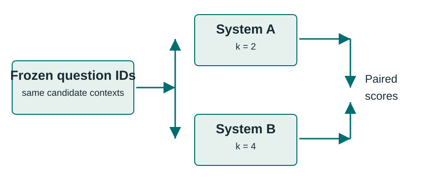
Open diagram for a larger view
Report retrieval coverage, answer and SP scores where applicable, failures, latency, and model-call cost.
More retrieved paragraphs can improve coverage and also add distracting text.
The offline k ablation changes the paragraph count while keeping the candidate pool and question fixed. For a live experiment, compare systems on the same IDs, with the same prompts and model version unless the prompt or model is the factor being tested.
Save per-example differences so you can inspect what improved and what regressed. Report the exact subset size and selection method. Small selected samples have high uncertainty and may overrepresent easy questions. A larger held-out evaluation with paired bootstrap confidence intervals is a suitable next experiment, provided the questions are sampled in a way that supports the intended claim.
5. Interpret results and improve the experiment
Use the saved trace to locate where the run first lost the needed information.
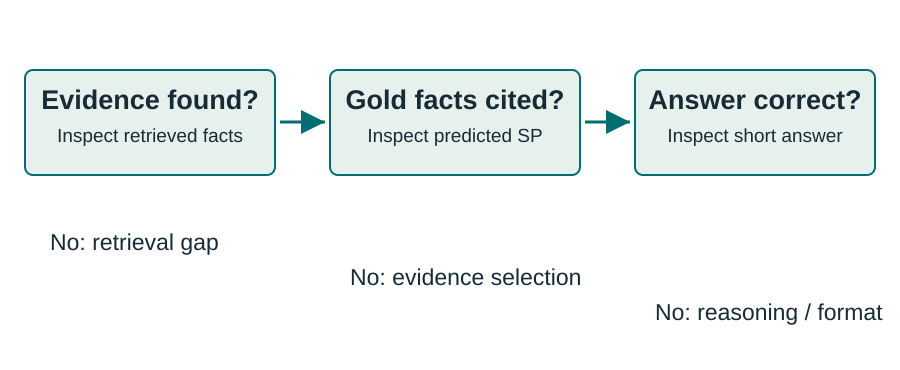
Open diagram for a larger view
Also inspect invalid citations, malformed outputs, API errors, and runs that reached the round limit.
A final score summarizes a failure. The trace helps explain it.
If gold evidence never reached the generator, retrieval is a plausible bottleneck. If evidence was present but the citations miss it, inspect the evidence-selection prompt and output. If citations match but the answer is wrong, inspect comparison reasoning, answer extraction, or formatting.
These are useful diagnostics, not automatic causal proofs. A model can answer correctly from memorized knowledge even when evidence is missing. A model can also cite a correct sentence after guessing. An oracle-evidence experiment or controlled removal of a supporting paragraph can test a more specific hypothesis, provided it is clearly labeled as a diagnostic intervention.
5. Interpret results and improve the experiment
Save enough information to reproduce the input and interpret the output.
| Record | Why it matters |
|---|---|
| Source URL, checksum, IDs, split | Identifies exactly which data was scored |
| Candidate scope, k, round bound | Defines the retrieval task and evidence budget |
| Package lock, code, prompts, model | Identifies the implementation and model settings |
| Predictions, traces, errors, timing | Makes every scored outcome inspectable |
| Scorer version and metric definitions | Prevents silent changes in score meaning |
A seed does not make hosted model outputs perfectly reproducible.
Use a manifest to record model identifiers and generation settings, including temperature, along with dataset and package versions. Store a content hash for any downloaded file and retain source attribution. The notebook’s module artifacts provide the starting pattern for these records.
Even with a fixed seed or zero temperature, hosted model behavior can change across backend versions or be nondeterministic. Save actual outputs and report when you ran the experiment. For expensive comparisons, agree on the evaluation subset and failure policy before making calls so selection cannot drift toward favorable results.
5. Interpret results and improve the experiment
Benchmark accuracy is one part of an application evaluation.
Combine benchmark scores with application-specific tasks and evidence checks.
HotpotQA is valuable because it provides structured evidence labels. Its evaluation design still has boundaries. Answer token overlap is a narrow measure, and the annotated evidence set is not guaranteed to list every valid way to support an answer.
For a deployed RAG application, add questions drawn from the actual corpus and user tasks. Measure citation entailment, unanswerable questions, source freshness, latency, access controls, and cost when those properties matter. Keep these custom metrics separate from official HotpotQA metrics so readers can tell what each score means.
5. Interpret results and improve the experiment
Predict the outcome before running each notebook exercise.
Explain each change using saved evidence, not only the final mean.
For exercise one, answer metrics do not exist unless a generator actually runs. Examine retrieved-title sets and the hidden gold-title sets after the retrieval call. Some questions may improve with k=2 and others may still miss evidence.
For exercise two, a correct unchanged answer retains its answer score. Removing a necessary citation lowers SP recall and usually SP F1, which also reduces joint scores. For exercise three, compare the trace and round count. The scripted demonstration verifies that the control flow matches the specified decisions. It does not show that a model makes those decisions reliably.
5. Interpret results and improve the experiment
State the task, show the measurements, and explain their limits.
Task: Per-example HotpotQA distractor retrieval on a documented development subset.
Method: TF-IDF paragraphs, bounded LangGraph retrieval loop, backend clearly identified.
Evidence: Frozen IDs, prediction file, traces, coverage diagnostics, and official scores for genuine model outputs.
Interpretation: Failure categories, uncertainty, cost, and the next controlled experiment.
The notebook turns this report outline into executable steps.
A useful report identifies the evaluation population and candidate corpus before presenting a score. Readers should be able to tell whether a result came from a synthetic fixture, a real-data retrieval experiment, or a live model generation run.
Next, try dense retrieval, a reranker, or a different rewrite policy while preserving the same evaluation protocol. Use the official HotpotQA project, JSON documentation, and evaluator as references, and the LangGraph tutorial for the graph concepts. Cite Yang et al. when using the dataset and preserve the dataset’s CC BY-SA 4.0 attribution and license information when redistributing samples.